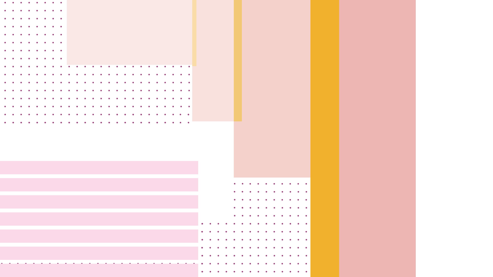

MY METHOD
For this assignment 1 - Dada Poem I chose a song Long Gone by a Thai singer - Phum Viphurit .
This is a relaxing alternate/indie song with a very playful and stress-free music video.
Not only the cute dancing of the girl but a retro and vibrant color palette in this MV also impressed me.
Taking this song and the MV as inspirations, I want to bring that playfulness into my design.
Starting with listening to the song many times and looking closely to the lyrics, I found that there is so many repetitions in this song, many of them stuck in my head for days. Through many researches, books, references, rough sketches, digital sketches on Illustrator, I decided to visualize that feeling when listening this song by repeating many design elements including typography or even circles, shapes, lines, rows and columns. Beside basic design elements I applied many design principles such as grid, dot grid, transparency, repetition, alignment and balance in positioning dots, lines, shapes. Although there are lots of things happen in this design, I made sure that they are all united as a whole. For example, the position of two circle shape, I put the smaller one higher than the bigger to bring more weight and also more balance to the design.
Talking about typography, in order to achieve a visually engaging and playful design, I played around with lots of fonts from serif, sans-serif to monospace, with different font styles and weights. I repeated, experimented, layered them although this reduced readability of some parts of my design. First, I used Clarendon - a slab serif font for my main title “You’ll be long gone” but it seemed to be old and not very effective. After looking again the song title at the beginning of the MV, i decided to try a geometric sans-serif Futura combined with a modern serif - Bodoni, and it seemed to work pretty well. About the monospace Cousine font in the right column, I just chose it because i felt that it can be suitable to my concept and I have just realized that monospace is also used in their MV as well!
In terms of color usage, beside the retro, vibrant color palette in the MV I want my color to have an autumn feel. Starting with mustard yellow, orange, deep red and add deep blue, reddish purple as complementary colors to balance the warmth and coolness.
Lastly, in terms of the final HTML - CSS product, this is the first time I have learned HTML CSS, so I did face several problems. I used both Google fonts and @fontface and I struggled with adding @fontface. I read the instruction on Canvas but the code didn’t work, after searching everywhere I realized that in my url should have ../ before the folder. And other small issues such as positioning, screen size,.. But in the end, I think I handled them pretty ok. I had to search for quite a lot of things through Google, I managed to add hyperlink to my two circle shapes. I added some hover animation to my design such as the falling and rising of two balls and some to the main typography. In general, everything I put into this design served the goal of conveying the playfulness of the Long Gone song.
DON'T FORGET TO TRY TWO DOTS OVER THERE!